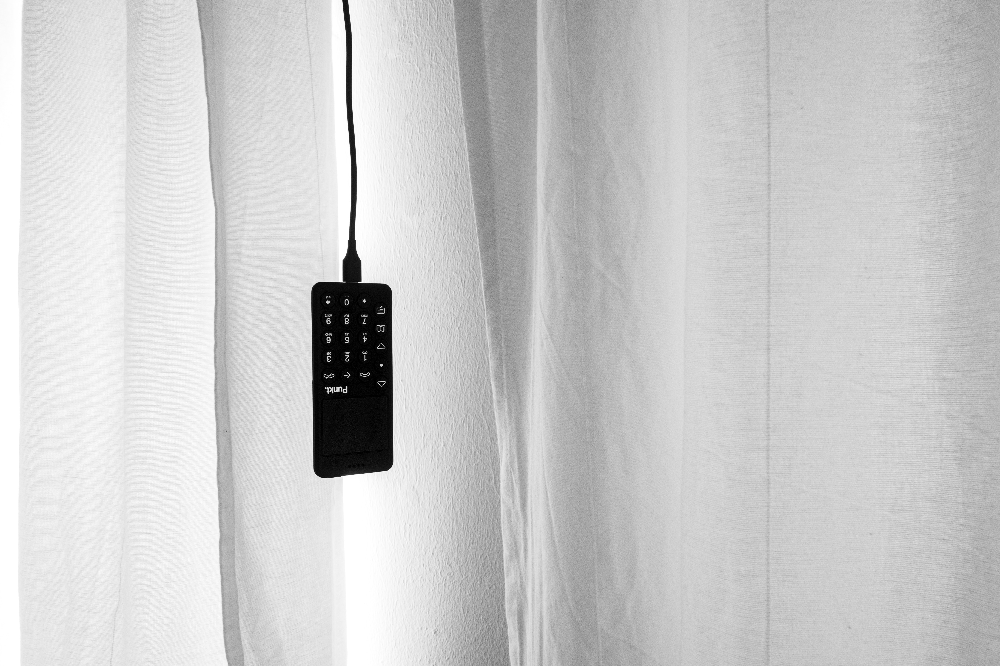

Make your smartphone a little dumber
Posted on Fri 01 September 2023 in Digital Minimalism

For many, MANY years, I've been an advocate for the simplicity of dumbphones. My go-to? The LightPhone 2. However, modern life sometimes demands the functionalities of a smartphone, such as banking or GPS navigation. Every once in a while, I wish my smartphone would be just a touch simpler, but I can't abandon its smart features entirely. There are times I need them, especially for those updates or browser-based app handshakes.
Thus, I've developed two scripts: dumbify and smartify. The project is here and here's your guide:
Prerequisites:
- Backup all essential data on your phone.
- Be familiar with your phone settings.
- Prepare a list of apps you want to uninstall, noting their full package names. If you're unsure, "Full Package Names" on F-Droid can assist.
Steps:
- Go to your phone settings and enable developer mode.
- Activate USB debugging.
- Connect your phone to your laptop.
- Run ./dumbify with your list of apps to uninstall. This script will identify these apps, create backups on your computer, and then remove them from your phone, while preserving app data.
- When you need your phone's advanced features again, simply run ./smartify to restore.
Note: I tried exporting the Google Play Store using this method and encountered an issue. I had to manually address it with GrapheneOS. It's not ideal, but it's a solution. I welcome any feedback on this.
Here's to the balance between simplicity and functionality,